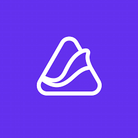

Work Experience
-

Openull, SSOMEE Operation Manager
- Decreased 30+ customer inquiries by creating FAQ dashboard analyzing 30+ voice of consumer daily using Excel
- Conducted research on specific operation methods of BNPL (Buy Now Pay Later), finance, B2C rental, and P2P market
-
KPMG Digital Consulting Intern
- Created slides pitch deck for executive reporting of process mining PoC project and secured a contract with a client
- Visualized 31 social insurance operation process with excel to prepare a data log for a process mining using Celonis
- Analyzed 80+ cases of CRM reports with effective data analytics and visualization for industrial supply business
-

Megazone Cloud, Go-To-Market Intern
- Researched Middle East market cloud industries, 10+ CSP companies and 50+ non-local tech companies in regions
- Strategized go-to-market to Middle East Asia region for MSP business by analyzing most promising industries (HealthCare, Blockchain, Cloud, Agriculture Tech) with the data from the Crunchbase including potential local clients